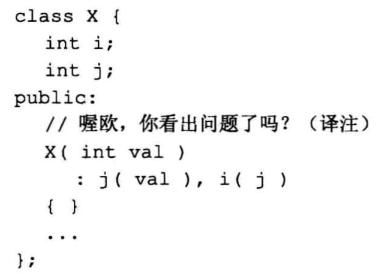
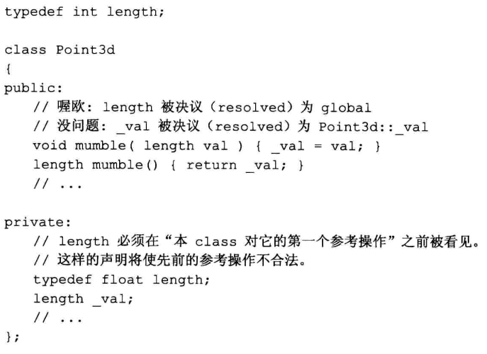
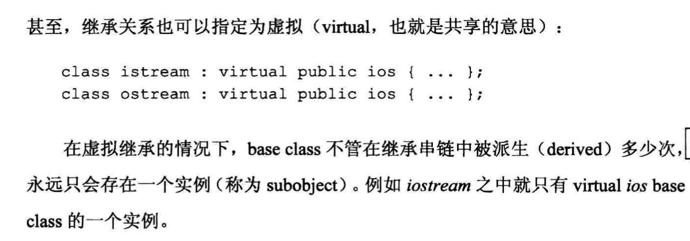
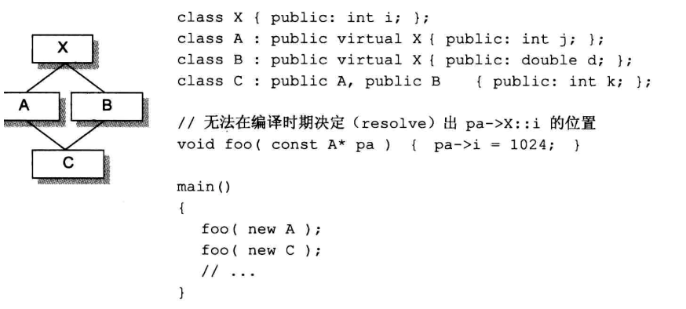
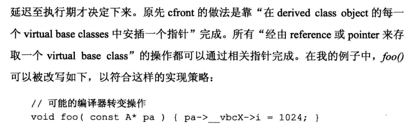
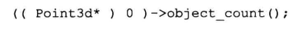
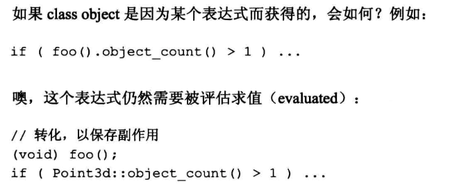
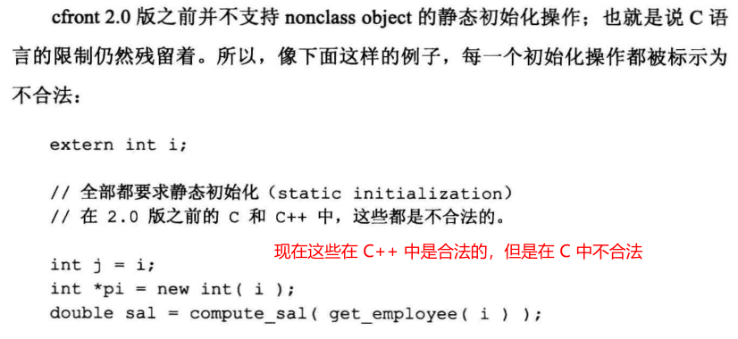
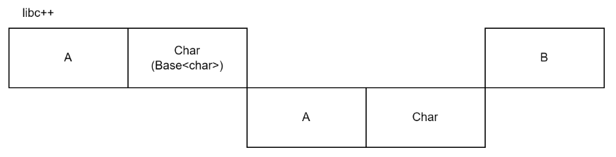
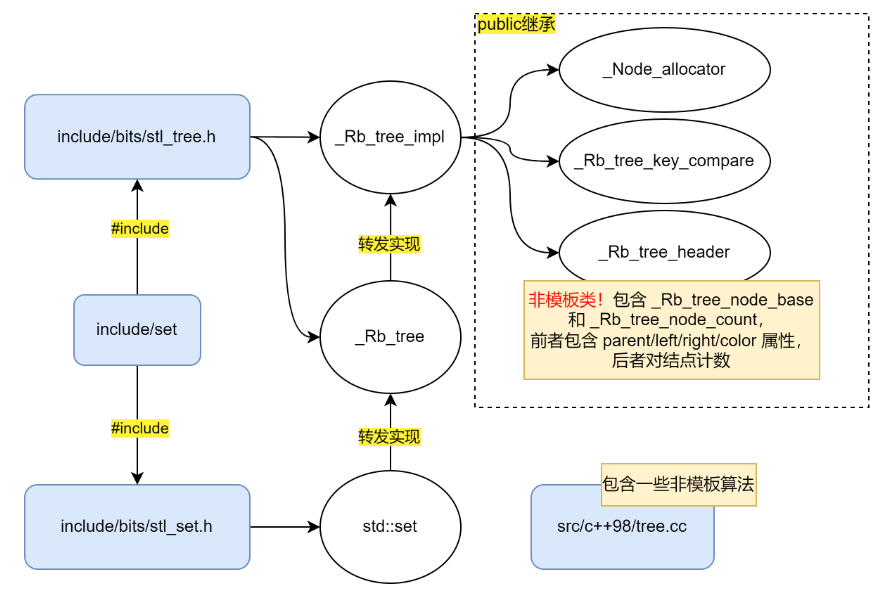

初始化会按照变量声明的顺序进行。因此虽然下面的代码想要用 j 的新值初始化 i，但实际上是 i(j) 先被执行，然后才是 j(val)。

不过，构造函数代码块中的初始化过程始终发生于成员初始化列表之后。
初始化会按照变量声明的顺序进行。因此虽然下面的代码想要用 j 的新值初始化 i，但实际上是 i(j) 先被执行，然后才是 j(val)。

不过，构造函数代码块中的初始化过程始终发生于成员初始化列表之后。
析构函数和构造函数一样，也分完整析构函数和基类析构函数两种。而且析构函数的工作流程和构造函数相反。
如果一个类的基类有未实现的析构函数（未提供定义或者是纯虚函数），会导致链接失败。这是因为子类的析构函数有调用基类析构函数的逻辑！
https://stackoverflow.com/a/461237
Declare destructors virtual in polymorphic base classes. This is Item 7 in Scott Meyers’ Effective C++. Meyers goes on to summarize that if a class has any virtual function, it should have a virtual destructor, and that classes not designed to be base classes or not designed to be used polymorphically should not declare virtual destructors.
**自动生成的析构函数不是虚函数，但是可以显式声明其为 virtual 然后用 = default 引入。**从基类继承的析构函数后虚实性质保持不变。
有了虚析构函数，才能正确地通过非本类的指针/引用析构或 delete 某个对象。通过基类指针 delete 子类对象
虚析构函数是给类型增加 vptr 的一种方法。有了虚析构函数就能通过不匹配的指针和 delete 关键字删除曾经 new 出的对象。
考虑 A *pa = new B;，其中 B 类虚拟继承于 A 类，通过 A 类指针 pa 访问到的成员就是真正要找的 A 中的成员，因为从 B 类指针转换到 A 类指针时编译器已经正确处理好了指针偏移问题，从而不需要担心没有 vptr 导致访问不到正确的成员。
考虑菱形继承的情况：
1 | struct A { … }; |
从指向 D 类真实对象的 B 类指针访问来自 A 中的成员，就会用上 B 类指针所在位置中的 vptr 查找偏置信息。
尽管现在的编译器能够正确理解数据成员（含有隐式的 this 指针）的使用，并在看到整个类定义之后再查找名字，类型名的查找则发生的很早，导致使用时可能看不到、或者使用了错误的类型声明。
所以，应该尽可能在类定义的开头写好类型别名。

1 | #include <iostream> |


cfront 实现

1 | #include <iostream> |
如果把 A 或者 B 的 virtual 继承属性删除就会出现 ambiguous 指代错误。因为 virtual 继承只保存基类的一份数据，删掉之后自然就有多份变量 i 了。不过，virtual 继承并不代表该类为多态类（可用 type traits 判断）。
同样的，如果 Interface 中有虚函数 foo，而 A 和 B 都继承了 Interface，C 继承了 A 和 B。如果 A 和 B 没有虚拟继承 Interface，那么在 C 的对象调用函数 foo 时将出现 ambiguous 指代错误。如果 C 重写了 foo 函数，那么指代就还是明确的。或者，如果 A 和 B 都是虚拟继承自 Interface，那么也不会有编译错误。但这样通过指针/引用调用虚函数 foo 就需要先取虚基类子对象 this 的偏移，修改 this 之后再从 vptr 中读虚函数 foo，开销是 4 次访存（将虚拟继承和虚函数调用的代价累加起来了）。
https://quuxplusone.github.io/blog/2019/09/30/what-is-the-vtt/#when-we-are-constructing-a-lion
很久以前没有静态成员函数（直到 Cfront 2.0 才加入），那个时候静态方法可以用这种方式调用：

该方法没有通过 this 访存，因而不会出现段错误。尽管这种方法还在某些编译器上能够使用，但这种写法在现在是未定义行为。
可以在一个表达式上调用静态成员函数。表达式的返回值被忽略，但是有副作用；另外表达式的返回值类型帮助确定了静态成员函数应该在哪里寻找。

std::forward 需要我们提供一个模板参数，它能把同类型（不包括值属性）的参数转发出去。
std::forward_like 则有两个模板参数，第一个参数需要显式提供，第二个参数从实参中推导。它从模板参数中获得转发需要使用的引用类型，并将实参转发出去。这意味着实参和模板参数的类型可以不一致！
std::forward_like 非常适合转发子对象的场合，因为它能让子对象和本身的左右值类型相同。比如在显式对象参数中可以使用。
全局区域定义的变量，可以具有 static 属性也可以没有。
编译器会抱怨：initializer element is not constant。
在用户程序真正运行前插入一段静态变量初始化代码。
Cfront 早期对 class object 支持了非常量的静态初始化，但标准类型（整数、指针等）的静态支持和 C 一样。

libstdc++ 用的是递归反向构造，尾部的参数先构造。与之对应，libc++ 用的是 parameter pack 继承，是正向构造。
两者都使用了下标编号。这样即便 std::tuple 的某两个参数类型相同，也能通过不同的下标把两个元素区分开。
两者都有 EBCO 技术。假定 Base<T, bool = InheritableEmptyBase<T>::value> 为两个库所用的元素包装类，Base 在参数为空类且能够被继承时，采用继承的方式存储元素，否则用成员变量存储元素。
但是由于元组参数构造顺序不同，两种库实现占用的空间也可能不同。考虑类型 std::tuple<A, char, A, char, B>，其中 A 和 B 都是空类型，它在 libc++ 中只需要占用 2 个字节。
而 libstdc++ 中同样的类型需要占用 3 个字节：
如图，最后一次继承的时候先继承 TupleImpl<char, A, char, B>（假设 TupleImpl 是递归继承功能的实现模板），后继承 Base<A>，但由于地址 0 处已经有 A 类型，所以只能放在地址 2 处。（EBCO 失效之后只能跨过整个基类，不能摆在基类的中间地址。）

相关文件：
include/set 头文件按顺序引入了 include/bits/stl_tree.h 和 include/bits/stl_set.h。include/bits/stl_set.h 定义了 std::set，依赖了 include/bits/stl_tree.h 却没有明确包含它。include/bits/stl_tree.h 定义了诸多类型，如未明确指出则默认下面提到的类型都是来自于这个头文件。src/c++98/tree.cc 实现了红黑树用到的非模板算法。这个文件只有 400 多行。std::set 将实现转发给 _Rb_tree 处理，而它又将实现转发给了 _Rb_tree_impl 处理。
_Rb_tree_impl 继承于：
_Node_allocator：是一个 typedef，实际类型是一个模板类，模板参数和 _Rb_tree 的参数有关。_Rb_tree_key_compare：是一个模板类，模板参数和 _Rb_tree 有关。_Rb_tree_header：非模板类。包含了 _Rb_tree_node_base 结构和 _Rb_tree_node_count。前者是表示红黑树结点的聚合类，包含了 parent/left/right/color 四个重要成员；后者是结点计数。初始化时，parent/left/right 都被设置为 header 本身的地址，而 color 被设置为红色，可见这个 header 就是标准库红黑树中的 nil 哨兵。另外，left 和 right 还有最小结点和最大结点的含义。
以插入算法举例，由于比较算子在模板中，所以需要用模板方法找到应该插入的位置，这些都在头文件 include/bits/stl_tree.h 中实现。接着调用插入并平衡的函数，该函数只操作指针，不关心结点中包含的值，所以这个部分可以在源文件 src/c++98/tree.cc 中实现，从而减少了代码膨胀。
按照上面的分析，可以解释以下未定义行为（但是不建议这么写）：
1 | std::set<int> set; |
由于 set.end() 返回了哨兵，初始化情况下三个指针都指向自己，所以按照自增算法会一直向右搜索，造成死循环。